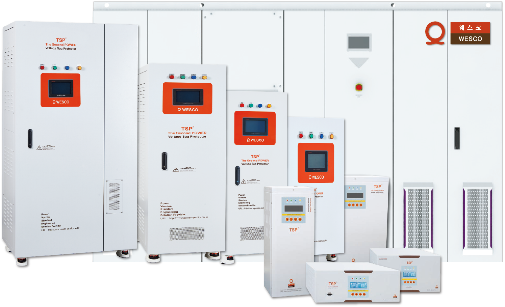
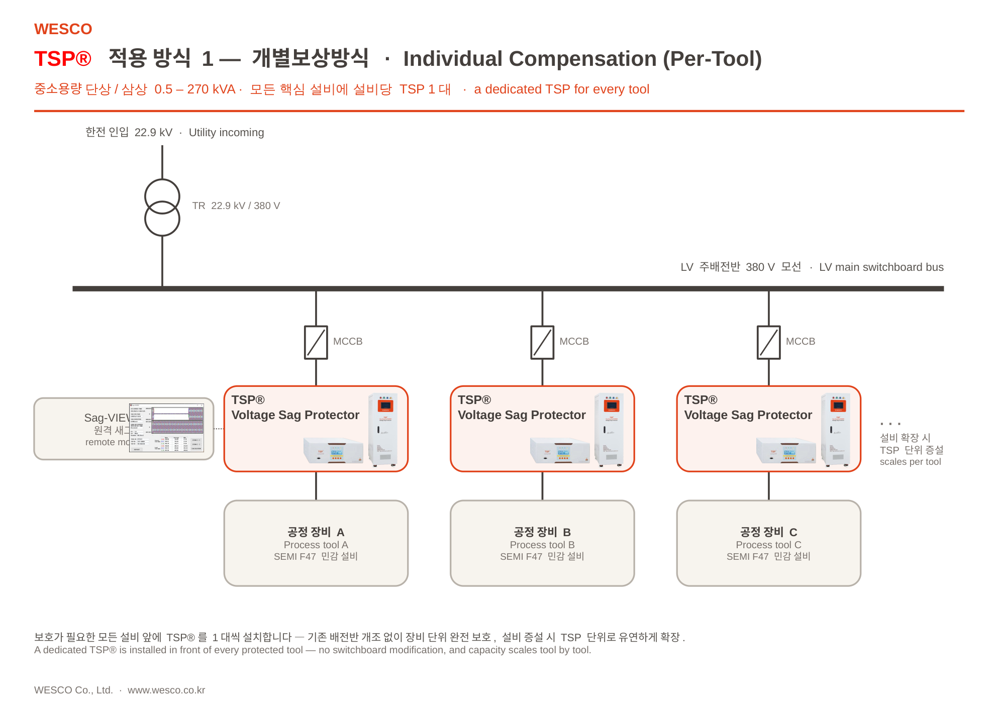
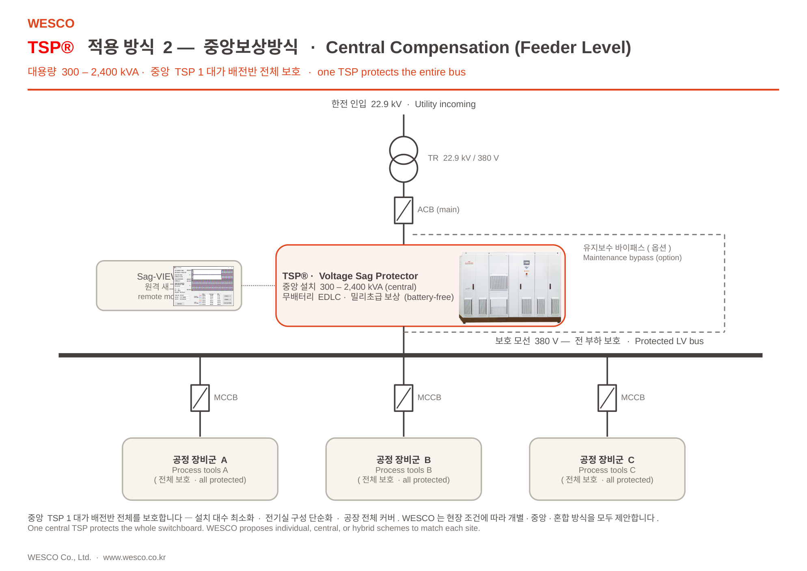

WESCO TSP
생산의 연속성을 지킵니다.
눈에 보이지 않는 순간전압강하로부터 반도체·디스플레이 생산 라인을 지켜 온 25년.

Company
제조사가 아니라,
Voltage Sag 솔루션 전문기업입니다.
2001년, 국내 최초로 순간전압강하 보호 솔루션을 개발하고 특허를 등록했습니다. 이후 25년간 이 분야 하나에 집중 — 문제를 진단하고, 보호 시스템을 설계하며, 제품 공급·설치 이후 모니터링·분석·유지관리까지 전 주기를 함께합니다.
The Invisible Threat
정전이 아니어도,
라인은 멈춥니다.
순간전압강하(Voltage Sag)는 완전한 정전이 아닙니다. 0.1초 남짓 전압이 정격 아래로 떨어졌다 회복되는 짧은 순간 — 사람은 알아채지 못해도 정밀 장비는 즉시 반응해 라인을 세웁니다.
How It Works
평상시엔 직결, 필요한 1초엔 보상.
TSP는 계통과 부하 사이에 직렬로 설치돼, 평상시엔 계통에 개입하지 않고 대기(Off-Line)합니다. 순간전압강하를 감지하면 계통을 분리하고 EDLC 에너지로 부하를 지킨 뒤, 복전을 확인·동기화해 무순단으로 되돌립니다. 인버터는 N+1 다중화로 안정성을 확보합니다.
- 01감지전압 저하를 2ms 이내 감지 (Off-Line 상시 대기)
- 02계통 분리SCR로 계통 순시 차단
- 03EDLC 보상EDLC → DC Link → Inverter → Load · 1초 100% 보상
- 04복전 · 동기화정상 복전 확인 후 전압·주파수·위상 정렬
- 05Bypass 복귀무순단 절체 → Bypass 복귀 · EDLC 재충전
계통은 순간전압강하를 겪지만, 설비는 그것을 인지조차 하지 못합니다.
Reliability & Safety
멈추지 않도록,
다중 안전 설계.
평상시 계통 직결과 이중 우회 경로로, 점검·정비 상황에서도 생산 라인의 전원을 끊지 않습니다.
평상시 Bypass 직결
정상 운전 시 계통 전원을 SCR로 직접 통과시켜 손실을 최소화합니다. 필요한 순간에만 보상 동작.
내장 Bypass 차단기
점검·정비 시 부하 전원을 끊지 않고 우회할 수 있는 바이패스 차단기를 기본 내장합니다.
외장 수동 바이패스 (옵션)
완전 격리 정비가 필요한 현장을 위한 외부 수동 바이패스(MBP)를 옵션으로 제공합니다.
The TSP Innovation
배터리 없이,
더 오래.
TSP는 울트라커패시터(EDLC)에 에너지를 저장합니다. 평상시엔 계통과 직결(Bypass)돼 손실 없이 전력을 통과시키고, 순간전압강하가 감지되면 즉시 저장 에너지로 부족분을 채웁니다.
- 배터리 없는 EDLC — 정기 배터리 교체가 필요 없는 장수명 에너지 저장.
- 평상시 Bypass 직결 — 고효율 통전, 필요한 순간에만 보상.
- Utility → TSP → Load 직렬 — 1초 표준 보상으로 설비 무중단.

Sustainability
배터리가 없다는 것의
가치.
EDLC 기반 설계는 정기 배터리 교체와 폐기를 없앱니다. 글로벌 공급망의 환경 기준에 부합하는 선택입니다.
납축전지 폐기물 없음
배터리 교체·폐기 과정이 없어 유해 폐기물 부담을 제거합니다.
장수명 에너지 저장
울트라커패시터로 정기 교체 없이 장기 운영합니다.
친환경 운영
냉각·소모품 부담이 낮아 운영 중 환경 영향을 줄입니다.
Product Lineup
0.5kVA부터 2,400kVA까지.
소형 정밀 장비부터 수전반 전체까지, 하나의 검증된 기술로 커버합니다.
소용량 · 단상
정밀 계측기·개별 설비용 컴팩트 라인. 벽걸이·스탠드형으로 협소 공간에도 설치.

중용량 · 삼상
생산 셀·라인 단위 보호. 반도체·디스플레이 공정 장비의 표준 선택.

대용량 · 삼상
수전반 직하 중앙 집중 보호. 라인 전체를 한 대로 지키는 대용량 대응.
Protection Architecture
현장에 맞게 —
개별 · 중앙 · 하이브리드.
보호가 필요한 설비마다 개별 보상, 배전반 전체를 한 대로 지키는 중앙 보상, 그리고 둘을 결합한 하이브리드 — 현장 조건에 맞춰 설계합니다.


모든 구성은 Utility → TSP → Load 직렬 원칙을 유지합니다.
Specifications
현장 조건에 맞춰
정밀하게.
| 모델 · 용량 | 치수 W×D×H (mm) | 중량 (kg) |
|---|---|---|
| 단상 · 110–220V | ||
| 1 kVA | 320 × 440 × 160 | 18 |
| 5 kVA | 430 × 530 × 280 | 44 |
| 10 kVA | 430 × 530 × 280 | 48 |
| 삼상 · 208–440V | ||
| 10 kVA | 500 × 600 × 980 | 130 |
| 50 kVA | 500 × 800 × 1,665 | 410 |
| 100 kVA | 1,000 × 600 × 1,935 | 650 |
| 200 kVA | 1,600 × 800 × 2,050 | 1,300 |
대표 사양 (도면 기준) · 전 모델 단상 0.5–10kVA / 삼상 5–200kVA 상세 사양서 제공 · 보상 1초 표준(3초 옵션) · 150·200kVA는 본체+UCP 2캐비닛 구성.
R&D & Manufacturing
설계부터 양산까지,
직접.
자체 연구조직이 설계하고, 자사 EMS 공장에서 양산하며, 국내외 기술 거점으로 대응합니다.
R&D 본사
연구개발·영업 본사. 하드웨어·소프트웨어 전담 연구조직(평균 10년+ 경력).
EMS 제조공장
제품 양산·조립. 설계부터 생산까지 일관 체계로 품질을 관리합니다.
기술 지원 센터
해외 고객 현장 기술 대응 거점.
자체 전압강하 시험·검증 인프라
Scale & Reach
숫자로 증명하는
25년.
History
2001년부터,
한 분야에 25년.
- 국내 최초 순간전압강하 보호 솔루션 개발·법인 설립
- ISO 9001 · 14001 · INNO-BIZ
- 현대제철·동부하이텍 공급
- 기업부설 연구소 · TSP® 상표 · CE · S-마크
- 현대·기아·LG디스플레이 공급
- 일본 SONY 수출
- 천만불 수출의 탑 (2018)
- TSMC·NXP·X-FAB·BOE 수출
- 헝가리 Volta Energy 수출
- 미국 NRTL 인증 취득
- 현대·기아 3년 독점 공급
- 창립 25주년 · 누적 150,000+ 대
Industries
가장 멈추면 안 되는
현장에서.


실제 WESCO 설치 현장 (대표 사례)
Reference Customers
세계적 제조사가
선택했습니다.
대표 고객사 (일부) · 총 900+ 고객사 · 16+개국 · 누적 150,000+ 대
Sag-VIEWER™ · Smart Monitoring
모든 순간전압강하를,
눈으로 확인합니다.
설치된 모든 TSP는 발생한 순간전압강하 이벤트를 자동으로 계측·기록하고 원격으로 감시합니다. 언제·얼마나 깊은 Sag가 있었는지, 설비가 정상 운전했는지 한눈에 확인합니다.

- 실시간 상태각 TSP의 현재 상태와 전압을 실시간 표시
- 통합 원격 감시전 사이트의 TSP를 한 화면에서 통합 모니터링
- 이벤트 로그 · History DB모든 Sag 이벤트를 자동 기록하고 조회
대표 장기 실적 · 헝가리 Volta Energy 53대 · 2024–2026 연간점검 정상
Certified & Verified
가장 까다로운 기준이,
우리의 표준입니다.
- KC
- CE
- NRTL
- SEMI F47
- SEMI S2
- ISO 9001
- ISO 14001
- INNO-BIZ
- 천만불 수출의 탑 (2018)
Why WESCO
WESCO를 선택하는
다섯 가지 이유.
Contact
생산의 연속성,
지금 상담하세요.
도입 검토·용량 선정·현장 실사까지, WESCO 기술영업이 직접 지원합니다.